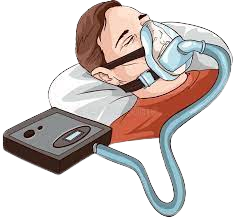

Thank you for choosing us!
Thank you for choosing our application. We strive to provide you with the best, highest quality experience. Hopefully, our website has helped you and your family through this difficult journey against sleep apnea. We would like to express our gratitude for placing your trust in us and partnering with us. Please feel free to reach out and share your thoughts and suggestions and we wish you the best of luck battling apnea.
Our Mission
Our mission is to provide an application to aid those with apnea. By detecting when an individual experiences an apnea episode, we would like to improve the person’s chances of overcoming apnea, and making it less fatal, saving human lives. Our goal is to track your vitals to determine your chances of experiencing an apnea episode, alerting you ahead of time and giving you the opportunity to obtain assistance - whether it be calling a hospital or alerting a family member. We aim to use the latest research and technology to create the most accurate predictions for you while creating a user interface that is easy to use.